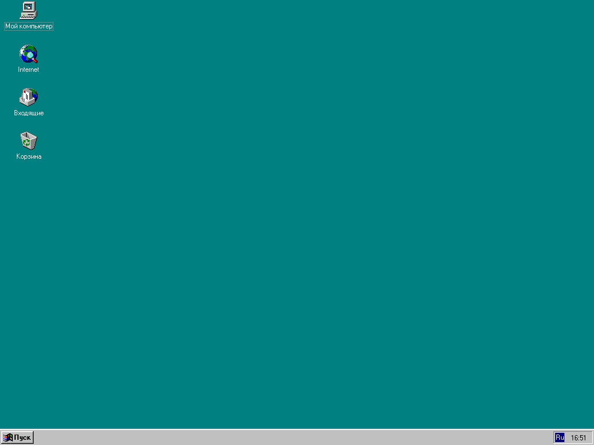
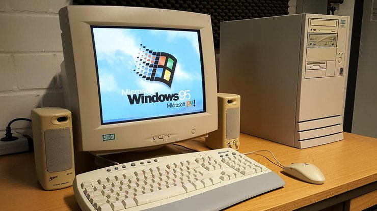

Windows 95, випущена 24 серпня 1995 року, була однією з найважливіших версій операційної системи
Microsoft Windows. Це було першим випуском Windows, який отримав широкий розповсюдження серед
користувачів з усієї країни. Вона відзначилася значними поліпшеннями у порівнянні з попередніми
версіями Windows і встановила стандарт для майбутніх операційних систем.
Одним з ключових поліпшень Windows 95 було повне відмовлення від MS-DOS у користувацькому
інтерфейсі, що означало, що вона більше не базувалася на DOS як попередні версії. Це дозволило
Windows 95 стати самостійною операційною системою з більшою стабільністю та розширеними
можливостями.
Windows 95 також вперше включала такі ключові функції, як Панель завдань, Пуск та Провідник, які
стали характерними для майбутніх версій Windows. Пуск став центральним місцем для запуску програм та
отримання доступу до різних системних налаштувань та опцій.
Іншим важливим поліпшенням була підтримка Plug and Play, що дозволяла автоматично визнавати та
налаштовувати нове апаратне забезпечення. Це значно спростило процес підключення нових пристроїв до
комп'ютера та зробило його більш доступним для користувачів.
Загалом, Windows 95 відіграла важливу роль у розвитку персональних комп'ютерів та комп'ютерних
технологій. Вона стала першою "масовою" версією Windows, яка дійсно стала стандартом для багатьох
користувачів і встановила основу для подальшого успіху операційних систем Windows.
2. ІНТЕРФЕЙС
Інтерфейс Windows 95 був радикальним оновленням порівняно з попередніми версіями операційної системи
Microsoft Windows. Він включав численні нововведення, які значно поліпшили зручність користування та
зробили операційну систему більш ефективною.
Один з головних елементів інтерфейсу Windows 95 була Панель завдань. Вона знаходилася внизу екрана і
містила кнопку Пуск, яка відкривала головне меню з доступом до програм, налаштувань та файлового
менеджера. Панель завдань також містила кнопки для перемикання між відкритими програмами, що
дозволяло користувачам легко перемикатися між різними завданнями.
Інший важливий елемент - це Провідник Windows. Це був файловий менеджер, який дозволяв користувачам
легко переглядати та організовувати файли та теки на їх комп'ютерах. Провідник також включав
інтегровані засоби для роботи з мережею та пошту, що робило його важливим інструментом для роботи з
комп'ютером.
Windows 95 також вперше включив стандартні графічні ефекти, такі як тіні, прозорість та анімація, що
робило інтерфейс більш привабливим та сучасним. Ці ефекти додавали глибину та різноманітність до
вигляду вікон та елементів управління.
Загалом, інтерфейс Windows 95 був важливим кроком уперед у розвитку графічних користувацьких
інтерфейсів для операційних систем. Він встановив стандарт для майбутніх версій Windows та сформував
основу для більш сучасних інтерфейсів, які ми бачимо сьогодні.

Інтерфейс Windows 95

Компютор з Windows 95
3. Думка користувачів
Думки користувачів про Windows 95 були величезною мірою позитивними, оскільки ця операційна система
внесла значні поліпшення в порівнянні з її попередниками.
Вперше включивши стильний та привабливий графічний інтерфейс з численними анімаціями та ефектами,
Windows 95 надав користувачам відчуття сучасності та інноваційності. Також у порівнянні з
попередніми версіями Windows, Windows 95 була більш стабільною та ефективною, що зробило роботу з
комп'ютером більш приємною та продуктивною.
Вперше в Windows була впроваджена функція Plug and Play, що дозволяла автоматично визнавати та
налаштовувати нове апаратне забезпечення без необхідності вручну встановлювати драйвери, що зробило
процес підключення нових пристроїв значно простішим.
Впровадження Меню Пуск та Провідника дозволило користувачам знаходити та запускати програми,
керувати файлами та теками швидше та зручніше.
Разом з випуском Windows 95, багато виробників програм створили спеціальні версії своїх продуктів
для роботи з цією операційною системою, що значно розширило функціональність комп'ютерів, що
працюють на Windows.
Загалом, Windows 95 була важливою версією операційної системи, яка суттєво вплинула на спосіб
користування комп'ютерами та встановила стандарт для майбутніх версій Windows. Багато користувачів
пам'ятають її як першу операційну систему, яка зробила комп'ютери доступними та зрозумілими для
широкої аудиторії.